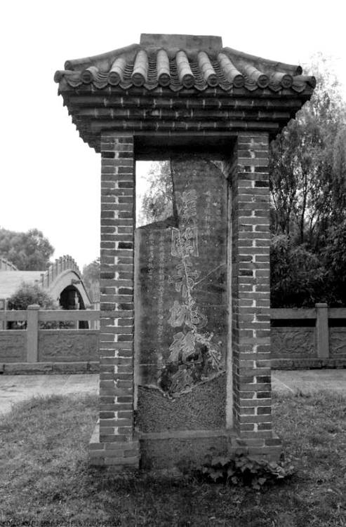

以上，常胜又常败，遇张则胜、遇李则败，不过是左良玉种种“乖张”情形中较突出的一点。类似的悖反，他还有许多。
比如，他究竟是忠于朝廷呢，还是奉行“有奶便是娘”的实利主义，“缓则受吾节制”骗取朝廷军饷，“急则拥兵自重”不惜哗变叛乱？很多事例表明，部队就如他的私人武装，朝廷能否用上，要看他乐意与否。不听调遣，在他是家常便饭。高兴则来，不高兴就置若罔闻，旨意、军令均如废纸。张国维三檄不应，熊文灿在安庆“部檄以良玉军隶焉，良玉轻文灿不为用”，杨嗣昌“九檄皆不至”，连侯恂召之“以兵来会”，也“迁延不至”……初为总兵，从昌平带出来原班人马不过二千，到崇祯末年，“兵八十万，号百万”，十年左右扩充数百倍，皆因屯兵自肥，为此招降纳叛、强征强敛，曾“驱襄阳一郡人以实军”。朱仙镇之役时，“兵以三十万称盛，然止四万在额受粮”[17]，即合法的部队编制人数应为四万，他实际拥有却超数倍之多。到武昌时期，竟有众八十万、号称一百万；一二年间，在原基础上再急剧扩充近两倍。这些，无不是明显的军阀标志。然而，当我们觉得可以轻去就、骄兵悍将、挟寇自重而断之时，他又给我们来一点小意外：“闻京师被陷，诸将汹汹，以江南自立君，请引兵东下。良玉恸哭，誓不许。”[18]《甲申朝事小纪》所载较具体：
崇祯十七年正月，上既封左良玉为宁南伯，升其子以平贼将军印，俾功成后世守武昌。诏到，方受命，而京师陷，贼之信踵至。良玉审知登遐凶问，三军缟素，率诸将旦夕临。翼日，诸将前请曰：“天下事皆当关我公，今南中立君，挟王子以坐诏我辈，宜乘其未定，引兵东下可也。”良玉抚膺而号曰：“不可！世守武昌，此非先帝之旨乎？先帝甫弃天下，而我背之，是幸国家之变以自利也。封疆之臣，应守封疆。南中立君，我自以西藩为效。有过此一步者，良玉誓之以死！”[19]
为阻止这次叛乱，左良玉不惜“尽出所藏金银彩物凡二三万，散之诸将”，同时采取强硬措施，“以巨舰置炮断江”，封锁去下游的航道。散财于众时，儿子左梦庚“有吝色”，左良玉大摇其头，连声叹息：“你以为这些都是你的财产吗？唉，左家军看来是保不住了！”当然，他只是将叛乱暂缓一年而已。翌年乙酉之叛，他再没能控制住局面，但诸多迹象表明，在此过程中左良玉即不尽属违心，相当程度也是身不由己。发兵不久，途次九江，面对前来质问的袁继咸，以及部下焚掠场面，他愧恨交迸，大叫“我负临侯！”呕血数升而死。
又如，此人心中有无“礼义廉耻”，我们所得信息也不一致。一方面，他许多做法根本没有原则和底线，一如丛林野兽，为了生存什么都干得出。他将军令置若罔闻，对敌人贿赂却欣然受之，余如谎报战功、捏造民意等事，也是信手拈来，毫无心理障碍。崇祯九年二月，奉命与另一总兵“夹剿”，而“中道遁归”，导致友军“无援败殁”，“良玉反以捷闻”。[20]崇祯十年，朝廷调其兵，左良玉出于避战目的，“令中州士大夫合疏留己。帝知出良玉意，不能夺也。”[21]以其行事惯常如此，我觉得判他一个“天良已泯”，绝不冤枉。但偶尔地，他又回到常识之内。朱仙镇之役，左军三过侯恂故里商丘，“必令其下曰：‘吾恩府家在此，敢有扰及草木者，斩！’入城谒太常公，拜伏如家人，不敢居于客将。”[22]世间所传，都是他如何跋扈，以上表现却对不上号。杨廷枢也为此作证，他在侯方域那里见过左良玉写给侯恂的信：“卑谨一如平时，乃知宁南感恩”[23]。原来，这样一个人心中不单也有“感恩”二字，而且愿意奉行。我们还可以看看他的私生活。“左家室尽于许州”——崇祯十一年十二月，左良玉奉调入陕作战，驻地许州（许昌）失陷，家眷因留彼处，除儿子左梦庚随军之外，全被杀光——此后他一直独身，而无近女色，“在武昌诸营，娼优歌舞达旦，元帅独块然一榻，无姬人侍侧者。”一日，部众“召某将官营妓十余人行酒。杯斝纵横，履舃交错”。左良玉在场，却格格不入，“少焉，左顾而咳，命以次引出，宾客肃然，左右莫敢仰视。”[24]除非身体有疾，否则我们应当承认，这种态度说明他并非恣睢其欲之人。
归德（商丘）侯府
左良玉受侯恂重用，感恩戴德。朱仙镇之役，左军三过归德，必严令无扰，入谒侯父，“拜谒如家人”。他与侯恂的特殊关系，是弘光内讧的重要线索。

左良玉所立碑
在许昌灞陵桥头，上刻“汉关帝挑袍处”六个大字，左侧两行小字：“总兵挂平贼将军印援剿总兵官后军都督府都督左施银十两 岁次庚辰中秋吉旦”，说明此碑立于崇祯十四年（1641）。俗谓碑文乃左氏遗墨，实则他目不识丁，写不了这样一笔字。碑中言之甚明，他仅为出资人而已。但此碑终究与左良玉存在直接关系，也算稀有难得。
他的乖张，还体现在“反智”而又“足智”。《明史》本传一开始就评价他：“目不知书，多智谋。”好像格格不入——不知书何以多智？但他确将这两点集于一身。他纯属文盲，以至于有下面的怪事：
宁南不知书，所有文檄，幕下儒生设意修词，援古证今，极力为之，宁南皆不悦。而敬亭耳剽口熟，从委巷活套中来者，无不与宁南意合。[25]
幕下文人起草的文件，他休说读懂，听都听不明白。结果，来了个说书匠柳敬亭，半文盲，比他略强，写点什么错别字连篇，但没有关系，左良玉喜欢，认为水平远在文人之上。为什么？因为柳敬亭的言辞套路，都从“说部”中来。之乎者也左良玉听不明白，评书故事却不难入耳即懂，于是“无不与宁南意合”。黄宗羲对此忍无可忍，斥其“宁南身为大将，而以倡优为腹心，其所授摄官，皆市井若己者，不亡何待乎！”然而，黄宗羲只知其一，不知其二。左良玉虽目不识丁，不读书、不看报、不学习，在明末赳赳武夫中却偏以多智著称。明军将领“肌肉男”多如牛毛，左良玉不是。他打仗不用蛮力，靠的是心眼儿、经验、审时度势和预见。崇祯十一年正月，左良玉大破张献忠于郧西，后者逃到南阳，效孙悟空灌江口“摇身一变，变作二郎爷爷”之计，全部换上官军旗号。左良玉赶到后留了心眼儿，不曾中计，躲过圈套。张献忠只得拔腿再逃，左良玉“追及，发两矢，中其肩，复挥刀击之，面流血，其部下救以免”。逃到谷城，张献忠情急再生一计，“请降，良玉知其伪，力请击之，文灿不许。”[26]入川作战，左良玉见识再次高出主帅一筹；当时，杨嗣昌认为要截张献忠后路，防止其掉头返回湖北，“促贼反楚，非算也”，左良玉指出，恰恰相反，“贼入川则有粮可因，回郧则无地可掠”[27]，应集中兵力正面歼之。此皆以智用兵之例。不但对敌，对朝廷、上司、友军，他同样工于心计。二千人起家，十余年间握百万之众，倘非深惟重虑，何以致之？其实，连他吃败仗，包括贻误军机，有时未必因为别的，而是过于黠慧狡狯的副作用，所谓聪明反被聪明误。